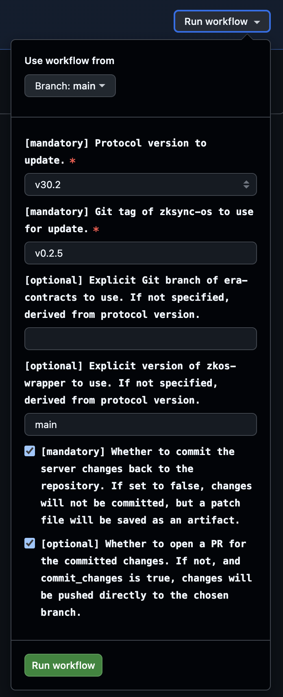

Update verification keys
Updates era-contracts repository with new set of verification keys generated from the latest ZKsync OS binary and trusted setup.
Use this script when you need to update verification keys for your contracts after a new ZKsync OS or contracts release.
Usually, the script is used by the protocol upgrade operator or automation to perform the protocol upgrade.
Script performs the following steps:
- Downloads the trusted setup (CRS) file
- Downloads the updated ZKsync OS binary for a specified release tag
- Generates a new SNARK verification key using the trusted setup and ZKsync OS binary
- Regenerates verifier smart contracts
- Produces updated Solidity verifier contracts for ZKsync OS
- Recomputes contracts hashes affected by the verifier changes
The script updates the following files in the era-contracts repository:
l1-contracts/contracts/state-transition/verifiers/ZKsyncOSVerifierPlonk.sol- Plonk verifier contracttools/verifier-gen/data/ZKsyncOS_plonk_scheduler_key.json- Plonk verifier key dataAllContractsHashes.json- recomputed contract hashes
Here is an example of a successful commit for the reference.
Commit example here is just for the reference.
The script itself does not perform any git operations (commit/push/PR creation). It is expected that the caller (manual operator or automation) will handle these operations after the script successfully completes.
Local use
REPO_DIR="/path/to/era-contracts" \
ZKOS_WRAPPER_PATH="/path/to/zksync-protocol-private" \
ZKSYNC_OS_REPOSITORY=matter-labs/zksync-os-private \
ZKSYNC_OS_TAG=v0.5.5 \
uv run -m scripts.update_vk
To run the script, you will need:
- General prerequisites including uv, Rust and NodeJS
- Specific release tag of ZKsync OS from
matter-labs/zksync-os-privatereleases specified throughZKSYNC_OS_TAGenv variable
In addition, the script requires access to the following repositories, which should be specified via corresponding path environment variables:
| Repository | Env Variable | Protocol version → Branch Mapping |
|---|---|---|
| era-contracts | REPO_DIR | Explicit branch or revision (e.g. v0.33.2) |
matter-labs/zksync-protocol-private | ZKOS_WRAPPER_PATH | v33.1 → explicit revision; v33.2 → pinned PR #49 revision |
Please, additionally check protocol compatibility to ensure the correct versions are used.
GitHub Actions
The script supports execution via GitHub Actions update-vk.yaml workflow
that can be triggered manually via GitHub Actions UI interface.
Input parameters
| Name | Required | Description |
|---|---|---|
protocol_version | ✅ | Protocol version to update verification keys for. |
zksync_os_tag | ❌ | OS release tag; defaults to the protocol mapping. |
zksync_os_repository | ❌ | OS release repository (owner/name); defaults to the protocol mapping. |
era_contracts_branch | ✅ | Contracts branch or revision. |
zkos_wrapper_version | v33.1 only | Wrapper revision matching the prover; v33.2 defaults to f28fbaac166383ef19cabb96ea4c7201a8096cc3. |
zkos_wrapper_repository | ❌ | Wrapper repository (owner/name); defaults to the protocol mapping. |
commit_changes | ❌ | Whether to commit the updated keys. Defaults to true. |
open_pr | ❌ | Whether to open a PR. Defaults to true. |

Follow more detailed tutorial in the GitHub Actions guide.
Outputs
On successful runs, the workflow uploads an era-contracts-patch-<protocol_version> artifact containing era_contracts_<protocol_version>.patch, with the changes made to the era-contracts repository.
It also uploads a verification-key-<protocol_version> artifact containing snark_vk_expected.json and vk_hash.txt.
The hash is extracted from the generated Plonk verifier contract and can be used to configure the server and prover.
If commit_changes and open_pr are set to true, a PR is opened automatically with the changes.
On failed runs, the workflow saves logs from the workspace .logs directory as an artifact.
Protocol v33.1
Select protocol_version=v33.1. The workflow defaults to:
| Input | Default |
|---|---|
zksync_os_repository | matter-labs/zksync-os-private |
zksync_os_tag | v0.5.5 |
zkos_wrapper_repository | matter-labs/zksync-protocol-private |
Supply zkos_wrapper_version and era_contracts_branch explicitly. Choose the wrapper revision
and circuit configuration used by the intended prover; the OS release tag alone does not determine the VK.
The workflow fails before building if either required input is missing.
Set commit_changes=false to generate the artifacts without committing contracts changes.
Reusable workflow callers can supply the same overrides, and default to not committing changes.
The script builds the zkos-wrapper/ workspace with security_100 explicitly enabled.
It runs generate-vk with both multiblock_batch.bin and multiblock_batch.text, the trusted setup,
and --check-aux-params, matching the application-bound configuration of prover v0.9.5-private.
That prover pins zksync-protocol-private revision 621e27502f7baf21b0eeafe742764ab474aa0f6d.
The v33.1 wrapper uses the larger setup_2^25.key trusted setup; the older
setup_2^24.key has too few points for its SNARK domain. Both files are checksum-verified.
The script also raises the main-thread stack limit and supplies RUST_MIN_STACK for worker threads.
For v33, dependency checkouts, downloads, and Cargo use the configured
MATTERLABS_BOTS GitHub App with contents-read access scoped to the private
protocol, private Airbender, and private OS repositories. Public era-contracts
is checked out separately using the workflow token (or RELEASE_TOKEN when
contracts writes are enabled), without requesting access through the app. The app must be
installed on these repositories. Contracts commits use RELEASE_TOKEN,
which needs write access to the target contracts repository when committing changes. The workflow uses GitHub CLI authentication for release downloads
and Cargo Git dependencies.
For a local run, first authenticate gh and check out the matching wrapper and contracts revisions:
WORKSPACE=/tmp/v33.1-vk \
REPO_DIR=/path/to/era-contracts \
ZKOS_WRAPPER_PATH=/path/to/zksync-protocol-private \
ZKSYNC_OS_REPOSITORY=matter-labs/zksync-os-private \
ZKSYNC_OS_TAG=v0.5.5 \
uv run -m scripts.update_vk
OS release assets are downloaded from ZKSYNC_OS_REPOSITORY with the GitHub CLI, which supports
GH_TOKEN, GITHUB_TOKEN, or local gh auth login credentials.
Local Cargo builds also need Git access to the wrapper’s private dependencies; HTTPS users can
run gh auth setup-git --hostname github.com and set CARGO_NET_GIT_FETCH_WITH_CLI=true.
The OS binary is downloaded afresh on each run so reusing a workspace cannot select a previous release.
Protocol v33.2
v33.2 reuses v33.1’s OS release (matter-labs/zksync-os-private, v0.5.5) and
100-bit application-bound proving configuration. It defaults to protocol PR #49
at f28fbaac166383ef19cabb96ea4c7201a8096cc3, including the merge of dev used by
the prover. Its SNARK domain is 2^22, so the workflow uses the existing
checksum-verified setup_2^24.key. v33.1 continues using the 2^25 setup.
Local callers can select this setup with ZKOS_WRAPPER_CRS_POWER=24.
Run generation on the high-performance CI runner, with an explicit compatible contracts revision and contracts writes disabled:
gh workflow run update-vk.yaml --repo matter-labs/zksync-os-scripts \
--ref di/v33.1-vk \
-f protocol_version=v33.2 \
-f era_contracts_branch=8c93047d8a3b2af7333c0efdd0c1b65a7a27dd25 \
-f zkos_wrapper_version=f28fbaac166383ef19cabb96ea4c7201a8096cc3 \
-f commit_changes=false -f open_pr=false
The contracts revision above is from release/v0.33.0-atomic-interop; the runner
only prepares a downloadable patch. It does not change the server or deploy
contracts. The VK artifact also includes intermediate wrapper VKs when emitted
by the CLI and generation-manifest.json with resolved source commits, OS asset
SHA-256 hashes, and CRS selection. Verify these against the prover pins and
bundled program before registering the generated hash. VK generation alone does
not verify a real proof under the new key.
Script dependencies
The script relies on the following external resources:
- Trusted setup CRS file
setup_2^24.key(v33.2) orsetup_2^25.key(v33.1) - ZKsync OS
multiblock_batch.binandmultiblock_batch.textfrommatter-labs/zksync-os-privatereleases zkos-wrapperfrommatter-labs/zksync-protocol-privateto generate verification keys- Plonk verifier contract generator
recompute_hashes.shscript to recompute contract hashes after update
If the script fails, it means that one of the dependencies is changed or unavailable. In this case, the script needs to be updated accordingly.
- CRS checksum mismatch → trusted setup file updated upstream
- To fix: check with DevOps, and update the expected checksum in the script
- Contracts regeneration failure → incompatible tooling on the
era-contractsbranch- To fix: align new
era-contractstooling updates with the scripts
- To fix: align new